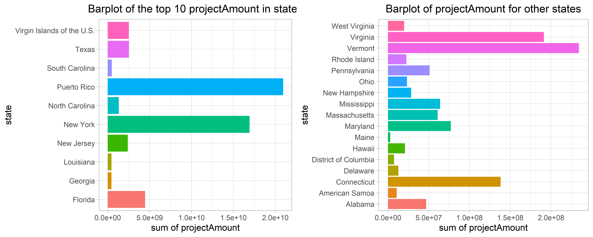
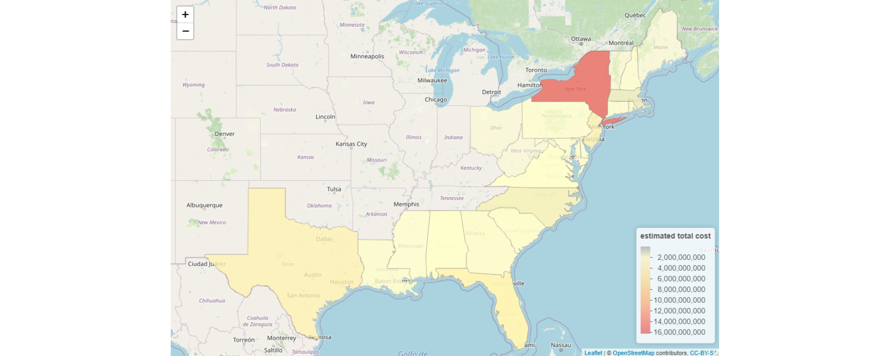

In this assignment, we use additional county level data from FEMA to produce maps with more features. The purpose of this assignment is to show our ability of using R to produce documents, presentations, and shiny apps.
The Public Assistance Funded Projects Details dataset contains obligated (financial obligation to grantee) Public Assistance projects, lists public assistance recipients designated as applicants in the data, and a list of every funded, individual project, called project worksheets. Open projects still under pre-obligation processing are not represented. This is raw, unedited data from FEMA’s National Emergency Management Information System (NEMIS).
#> disasterNumber declarationDate incidentType pwNumber
#> 1 1239 1998-08-26T04:00:00.000Z Severe Storm(s) 41
#> 2 1239 1998-08-26T04:00:00.000Z Severe Storm(s) 51
#> 3 1239 1998-08-26T04:00:00.000Z Severe Storm(s) 43
#> 4 1239 1998-08-26T04:00:00.000Z Severe Storm(s) 2
#> 5 1239 1998-08-26T04:00:00.000Z Severe Storm(s) 47
#> applicationTitle applicantId damageCategoryCode
#> 1 Not Provided 463-99463-00 C - Roads and Bridges
#> 2 Not Provided 463-99463-00 C - Roads and Bridges
#> 3 Not Provided 463-99463-00 C - Roads and Bridges
#> 4 (L) 465-19792-01 F - Public Utilities
#> 5 Not Provided 463-99463-00 C - Roads and BridgesThere are 79192 rows and 22 columns.
#> disasterNumber declarationDate incidentType pwNumber
#> 1 1866 2009-12-22T05:00:00.000Z Hurricane 1
#> 2 1866 2009-12-22T05:00:00.000Z Hurricane 2
#> 3 1866 2009-12-22T05:00:00.000Z Hurricane 3
#> 4 1866 2009-12-22T05:00:00.000Z Hurricane 4
#> 5 1866 2009-12-22T05:00:00.000Z Hurricane 5
#> applicationTitle applicantId damageCategoryCode
#> 1 DIW-097-02F 097-U15P3-00 F - Public Utilities
#> 2 DIW-097-01F 097-U15P3-00 F - Public Utilities
#> 3 DIW-097-03F 097-U15P3-00 F - Public Utilities
#> 4 DIW-097-04F 097-U15P3-00 F - Public Utilities
#> 5 DIW-097-01B 097-U15P3-00 B - Protective Measures-Total Project Amount for Each State
-Total Project Amount for Each Year
-Total Project Amount for Different Project Size
-Total Project Amount for Different Damage Categories

Combine Fips Code with Maps Data.
Combine Maps Data with data we want to draw.
We draw the total cost of every state in map.

As shown in the picture, hurricanes mainly influence the east coast. New York has the largest estimated total cost in 2009-2018.
If we put the top 10 counties with the largest estimated total cost in the same graph with other counties, the differences among counties will be hard to find.
So we draw the top 10 counties alone and it appears that they are still hard to find in map because of their tiny area.
| county | funding | |
|---|---|---|
| 7 | new york,new york | 9800666891 |
| 6 | new york,nassau | 1812897932 |
| 8 | new york,queens | 1181782058 |
| 10 | texas,harris | 815788676 |
| 1 | florida,bay | 696292642 |
| 3 | florida,miami-dade | 382560652 |
| 4 | new jersey,monmouth | 317317875 |
| 5 | new jersey,ocean | 277788906 |
| 9 | new york,suffolk | 248392959 |
| 2 | florida,broward | 203482941 |
And the rest counties are drawn in this map: